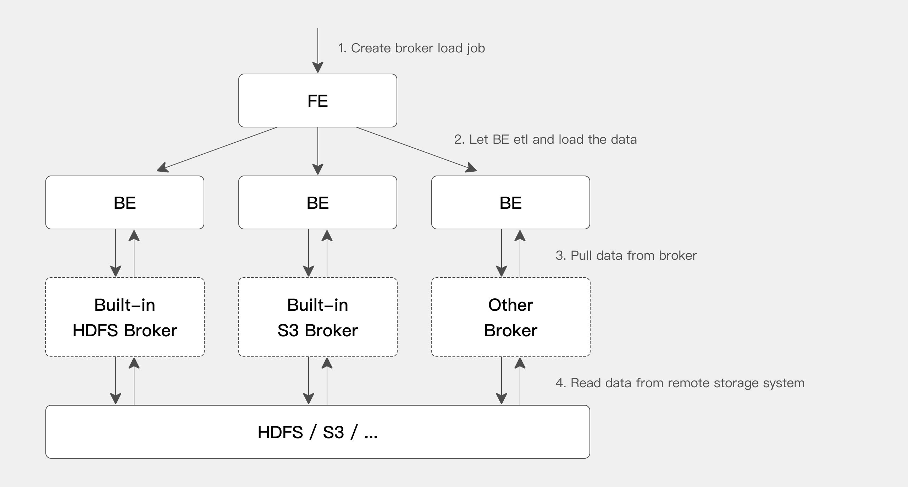

4.1.2.2 Broker Load¶
1 为什么引入 Broker Load？¶
Stream Load 是一种推的方式，即导入的数据依靠客户端读取，并推送到 Doris。Broker Load 则是将导入请求发送给 Doris，有 Doris 主动拉取数据，所以如果数据存储在类似 HDFS 或者 对象存储中，则使用 Broker Load 是最方便的。这样，数据就不需要经过客户端，而有 Doris 直接读取导入。
从 HDFS 或者 S3 直接读取，也可以通过 湖仓一体/TVF 中的 HDFS TVF 或者 S3 TVF 进行导入。基于 TVF 的 Insert Into 当前为同步导入，Broker Load 是一个异步的导入方式。
Broker Load 适合源数据存储在远程存储系统，比如 HDFS，并且数据量比较大的场景。
2 基本原理¶
用户在提交导入任务后，FE 会生成对应的 Plan 并根据目前 BE 的个数和文件的大小，将 Plan 分给 多个 BE 执行，每个 BE 执行一部分导入数据。
BE 在执行的过程中会从 Broker 拉取数据，在对数据 transform 之后将数据导入系统。所有 BE 均完成导入，由 FE 最终决定导入是否成功。

从上图中可以看到，BE 会依赖 Broker 进程来读取相应远程存储系统的数据。之所以引入 Broker 进程，主要是用来针对不同的远程存储系统，用户可以按照 Broker 进程的标准开发其相应的 Broker 进程，Broker 进程可以使用 Java 程序开发，更好的兼容大数据生态中的各类存储系统。由于 broker 进程和 BE 进程的分离，也确保了两个进程的错误隔离，提升 BE 的稳定性。
当前 BE 内置了对 HDFS 和 S3 两个 Broker 的支持，所以如果从 HDFS 和 S3 中导入数据，则不需要额外启动 Broker 进程。如果有自己定制的 Broker 实现，则需要部署相应的 Broker 进程。
3 导入语法¶
| SQL | |
|---|---|
1 2 3 4 5 6 7 8 | |
具体的使用语法，请参考 SQL 手册中的 Broker Load。
4 查看导入状态¶
Broker load 是一个异步的导入方式，具体导入结果可以通过 SHOW LOAD 命令查看
| SQL | |
|---|---|
1 2 3 4 5 6 7 8 9 10 11 12 13 14 15 16 17 18 | |
5 取消导入¶
当 Broker load 作业状态不为 CANCELLED 或 FINISHED 时，可以被用户手动取消。取消时需要指定待取消导入任务的 Label。取消导入命令语法可执行 CANCEL LOAD 查看。
例如：撤销数据库 DEMO 上，label 为 broker_load_2022_03_23 的导入作业
| SQL | |
|---|---|
1 | |
6 HDFS Load¶
6.1 简单认证¶
简单认证即 Hadoop 配置 hadoop.security.authentication 为 simple 。
| SQL | |
|---|---|
1 2 3 4 | |
username 配置为要访问的用户，密码置空即可。
6.2 Kerberos 认证¶
该认证方式需提供以下信息：
-
hadoop.security.authentication：指定认证方式为 Kerberos。 -
hadoop.kerberos.principal：指定 Kerberos 的 principal。 -
hadoop.kerberos.keytab：指定 Kerberos 的 keytab 文件路径。该文件必须为 Broker 进程所在服务器上的文件的绝对路径。并且可以被 Broker 进程访问。 -
kerberos_keytab_content：指定 Kerberos 中 keytab 文件内容经过 base64 编码之后的内容。这个跟kerberos_keytab配置二选一即可。
示例如下：
| Bash | |
|---|---|
1 2 3 4 5 6 7 8 9 10 | |
采用 Kerberos 认证方式，需要 krb5.conf (opens new window) 文件，krb5.conf 文件包含 Kerberos 的配置信息，通常，应该将 krb5.conf 文件安装在目录/etc 中。可以通过设置环境变量 KRB5_CONFIG 覆盖默认位置。krb5.conf 文件的内容示例如下：
| Bash | |
|---|---|
1 2 3 4 5 6 7 8 9 10 11 | |
6.3 HDFS HA 模式¶
这个配置用于访问以 HA 模式部署的 HDFS 集群。
-
dfs.nameservices：指定 HDFS 服务的名字，自定义，如："dfs.nameservices" = "my_ha"。 -
dfs.ha.namenodes.xxx：自定义 namenode 的名字，多个名字以逗号分隔。其中 xxx 为dfs.nameservices中自定义的名字，如： "dfs.ha.namenodes.my_ha" = "my_nn"。 -
dfs.namenode.rpc-address.xxx.nn：指定 namenode 的 rpc 地址信息。其中 nn 表示dfs.ha.namenodes.xxx中配置的 namenode 的名字，如："dfs.namenode.rpc-address.my_ha.my_nn" = "host:port"。 -
dfs.client.failover.proxy.provider.[nameservice ID]：指定 client 连接 namenode 的 provider，默认为：org.apache.hadoop.hdfs.server.namenode.ha.ConfiguredFailoverProxyProvider。
示例如下：
| Bash | |
|---|---|
1 2 3 4 5 6 7 8 | |
HA 模式可以和前面两种认证方式组合，进行集群访问。如通过简单认证访问 HA HDFS：
| Bash | |
|---|---|
1 2 3 4 5 6 7 8 9 10 | |
6.4 导入示例¶
-
导入 HDFS 上的 TXT 文件
SQL 1 2 3 4 5 6 7 8 9 10 11 12 13 14 15 16 17
LOAD LABEL demo.label_20220402 ( DATA INFILE("hdfs://host:port/tmp/test_hdfs.txt") INTO TABLE `load_hdfs_file_test` COLUMNS TERMINATED BY "\t" (id,age,name) ) with HDFS ( "fs.defaultFS"="hdfs://host:port", "hadoop.username" = "user" ) PROPERTIES ( "timeout"="1200", "max_filter_ratio"="0.1" ); -
HDFS 需要配置 NameNode HA 的情况
SQL 1 2 3 4 5 6 7 8 9 10 11 12 13 14 15 16 17 18 19 20 21 22
LOAD LABEL demo.label_20220402 ( DATA INFILE("hdfs://hafs/tmp/test_hdfs.txt") INTO TABLE `load_hdfs_file_test` COLUMNS TERMINATED BY "\t" (id,age,name) ) with HDFS ( "hadoop.username" = "user", "fs.defaultFS"="hdfs://hafs"， "dfs.nameservices" = "hafs", "dfs.ha.namenodes.hafs" = "my_namenode1, my_namenode2", "dfs.namenode.rpc-address.hafs.my_namenode1" = "nn1_host:rpc_port", "dfs.namenode.rpc-address.hafs.my_namenode2" = "nn2_host:rpc_port", "dfs.client.failover.proxy.provider.hafs" = "org.apache.hadoop.hdfs.server.namenode.ha.ConfiguredFailoverProxyProvider" ) PROPERTIES ( "timeout"="1200", "max_filter_ratio"="0.1" ); -
从 HDFS 导入数据，使用通配符匹配两批文件，分别导入到两个表中
SQL 1 2 3 4 5 6 7 8 9 10 11 12 13 14 15 16 17 18 19 20 21
LOAD LABEL example_db.label2 ( DATA INFILE("hdfs://host:port/input/file-10*") INTO TABLE `my_table1` PARTITION (p1) COLUMNS TERMINATED BY "," (k1, tmp_k2, tmp_k3) SET ( k2 = tmp_k2 + 1, k3 = tmp_k3 + 1 ), DATA INFILE("hdfs://host:port/input/file-20*") INTO TABLE `my_table2` COLUMNS TERMINATED BY "," (k1, k2, k3) ) with HDFS ( "fs.defaultFS"="hdfs://host:port", "hadoop.username" = "user" );使用通配符匹配导入两批文件
file-10*和file-20*。分别导入到my_table1和my_table2两张表中。其中my_table1指定导入到分区p1中，并且将导入源文件中第二列和第三列的值 +1 后导入。 -
使用通配符从 HDFS 导入一批数据
SQL 1 2 3 4 5 6 7 8 9 10 11
LOAD LABEL example_db.label3 ( DATA INFILE("hdfs://host:port/user/doris/data/*/*") INTO TABLE `my_table` COLUMNS TERMINATED BY "\\x01" ) with HDFS ( "fs.defaultFS"="hdfs://host:port", "hadoop.username" = "user" );指定分隔符为 Hive 经常用的默认分隔符
\\x01，并使用通配符 * 指定data目录下所有目录的所有文件。 -
导入 Parquet 格式数据，指定 FORMAT 为
parquetSQL 1 2 3 4 5 6 7 8 9 10 11 12
LOAD LABEL example_db.label4 ( DATA INFILE("hdfs://host:port/input/file") INTO TABLE `my_table` FORMAT AS "parquet" (k1, k2, k3) ) with HDFS ( "fs.defaultFS"="hdfs://host:port", "hadoop.username" = "user" );默认是通过文件后缀判断。
-
导入数据，并提取文件路径中的分区字段
SQL 1 2 3 4 5 6 7 8 9 10 11 12 13
LOAD LABEL example_db.label5 ( DATA INFILE("hdfs://host:port/input/city=beijing/*/*") INTO TABLE `my_table` FORMAT AS "csv" (k1, k2, k3) COLUMNS FROM PATH AS (city, utc_date) ) with HDFS ( "fs.defaultFS"="hdfs://host:port", "hadoop.username" = "user" );my_table表中的列为k1, k2, k3, city, utc_date。其中
hdfs://hdfs_host:hdfs_port/user/doris/data/input/dir/city=beijing目录下包括如下文件：Bash 1 2 3 4
hdfs://hdfs_host:hdfs_port/input/city=beijing/utc_date=2020-10-01/0000.csv hdfs://hdfs_host:hdfs_port/input/city=beijing/utc_date=2020-10-02/0000.csv hdfs://hdfs_host:hdfs_port/input/city=tianji/utc_date=2020-10-03/0000.csv hdfs://hdfs_host:hdfs_port/input/city=tianji/utc_date=2020-10-04/0000.csv文件中只包含
k1, k2, k3三列数据，city, utc_date这两列数据会从文件路径中提取。 -
对导入数据进行过滤
Bash 1 2 3 4 5 6 7 8 9 10 11 12 13 14 15 16
LOAD LABEL example_db.label6 ( DATA INFILE("hdfs://host:port/input/file") INTO TABLE `my_table` (k1, k2, k3) SET ( k2 = k2 + 1 ) PRECEDING FILTER k1 = 1 WHERE k1 > k2 ) with HDFS ( "fs.defaultFS"="hdfs://host:port", "hadoop.username" = "user" );只有原始数据中，k1 = 1，并且转换后，k1 > k2 的行才会被导入。
-
导入数据，提取文件路径中的时间分区字段
Bash 1 2 3 4 5 6 7 8 9 10 11 12 13 14 15 16
LOAD LABEL example_db.label7 ( DATA INFILE("hdfs://host:port/user/data/*/test.txt") INTO TABLE `tbl12` COLUMNS TERMINATED BY "," (k2,k3) COLUMNS FROM PATH AS (data_time) SET ( data_time=str_to_date(data_time, '%Y-%m-%d %H%%3A%i%%3A%s') ) ) with HDFS ( "fs.defaultFS"="hdfs://host:port", "hadoop.username" = "user" );Tip
时间包含 %3A。在 hdfs 路径中，不允许有 ':'，所有 ':' 会由 %3A 替换。
路径下有如下文件：
Bash 1 2
/user/data/data_time=2020-02-17 00%3A00%3A00/test.txt /user/data/data_time=2020-02-18 00%3A00%3A00/test.txt表结构为：
SQL 1 2 3 4 5 6 7 8
CREATE TABLE IF NOT EXISTS tbl12 ( data_time DATETIME, k2 INT, k3 INT ) DISTRIBUTED BY HASH(data_time) BUCKETS 10 PROPERTIES ( "replication_num" = "3" ); -
使用 Merge 方式导入
SQL 1 2 3 4 5 6 7 8 9 10 11 12 13 14 15 16 17
LOAD LABEL example_db.label8 ( MERGE DATA INFILE("hdfs://host:port/input/file") INTO TABLE `my_table` (k1, k2, k3, v2, v1) DELETE ON v2 > 100 ) with HDFS ( "fs.defaultFS"="hdfs://host:port", "hadoop.username"="user" ) PROPERTIES ( "timeout" = "3600", "max_filter_ratio" = "0.1" );使用 Merge 方式导入。
my_table必须是一张 Unique Key 的表。当导入数据中的 v2 列的值大于 100 时，该行会被认为是一个删除行。导入任务的超时时间是 3600 秒，并且允许错误率在 10% 以内。 -
导入时指定 source_sequence 列，保证替换顺序
Bash 1 2 3 4 5 6 7 8 9 10 11 12 13
LOAD LABEL example_db.label9 ( DATA INFILE("hdfs://host:port/input/file") INTO TABLE `my_table` COLUMNS TERMINATED BY "," (k1,k2,source_sequence,v1,v2) ORDER BY source_sequence ) with HDFS ( "fs.defaultFS"="hdfs://host:port", "hadoop.username"="user" );my_table必须是 Unique Key 模型表，并且指定了 Sequence 列。数据会按照源数据中source_sequence列的值来保证顺序性。 -
导入指定文件格式为
json，并指定json_root、jsonpathsSQL 1 2 3 4 5 6 7 8 9 10 11 12 13 14 15
LOAD LABEL example_db.label10 ( DATA INFILE("hdfs://host:port/input/file.json") INTO TABLE `my_table` FORMAT AS "json" PROPERTIES( "json_root" = "$.item", "jsonpaths" = "[\"$.id\", \"$.city\", \"$.code\"]" ) ) with HDFS ( "fs.defaultFS"="hdfs://host:port", "hadoop.username"="user" );jsonpaths也可以与column list及SET (column_mapping)配合使用：SQL 1 2 3 4 5 6 7 8 9 10 11 12 13 14 15 16 17
LOAD LABEL example_db.label10 ( DATA INFILE("hdfs://host:port/input/file.json") INTO TABLE `my_table` FORMAT AS "json" (id, code, city) SET (id = id * 10) PROPERTIES( "json_root" = "$.item", "jsonpaths" = "[\"$.id\", \"$.city\", \"$.code\"]" ) ) with HDFS ( "fs.defaultFS"="hdfs://host:port", "hadoop.username"="user" );
7 S3 Load¶
Doris 支持通过 S3 协议直接从支持 S3 协议的对象存储系统导入数据。这里主要介绍如何导入 AWS S3 中存储的数据，支持导入其他支持 S3 协议的对象存储系统可以参考 AWS S3。
7.1 准备工作¶
-
AK 和 SK：首先需要找到或者重新生成
AWS Access keys，可以在AWS console的My Security Credentials找到生成方式。 -
REGION 和 ENDPOINT：REGION 可以在创建桶的时候选择也可以在桶列表中查看到。每个 REGION 的 S3 ENDPOINT 可以通过如下页面查到 AWS 文档。
7.2 导入示例¶
| SQL | |
|---|---|
1 2 3 4 5 6 7 8 9 10 11 12 13 14 15 16 17 | |
7.3 常见问题¶
-
S3 SDK 默认使用 virtual-hosted style 方式。但某些对象存储系统可能没开启或没支持 virtual-hosted style 方式的访问，此时我们可以添加
use_path_style参数来强制使用 path style 方式：Bash 1 2 3 4 5 6 7 8
WITH S3 ( "AWS_ENDPOINT" = "AWS_ENDPOINT", "AWS_ACCESS_KEY" = "AWS_ACCESS_KEY", "AWS_SECRET_KEY"="AWS_SECRET_KEY", "AWS_REGION" = "AWS_REGION", "use_path_style" = "true" ) -
支持使用临时秘钥 (TOKEN) 访问所有支持 S3 协议的对象存储，用法如下：
Bash 1 2 3 4 5 6 7 8
WITH S3 ( "AWS_ENDPOINT" = "AWS_ENDPOINT", "AWS_ACCESS_KEY" = "AWS_TEMP_ACCESS_KEY", "AWS_SECRET_KEY" = "AWS_TEMP_SECRET_KEY", "AWS_TOKEN" = "AWS_TEMP_TOKEN", "AWS_REGION" = "AWS_REGION" )
8 其他 Broker 导入¶
其他远端存储系统的 Broker 是 Doris 集群中一种可选进程，主要用于支持 Doris 读写远端存储上的文件和目录。目前提供了如下存储系统的 Broker 实现。
-
阿里云 OSS
-
百度云 BOS
-
腾讯云 CHDFS
-
腾讯云 GFS
-
华为云 OBS
-
JuiceFS
-
GCS
Broker 通过提供一个 RPC 服务端口来提供服务，是一个无状态的 Java 进程，负责为远端存储的读写操作封装一些类 POSIX 的文件操作，如 open，pread，pwrite 等等。除此之外，Broker 不记录任何其他信息，所以包括远端存储的连接信息、文件信息、权限信息等等，都需要通过参数在 RPC 调用中传递给 Broker 进程，才能使得 Broker 能够正确读写文件。
Broker 仅作为一个数据通路，并不参与任何计算，因此仅需占用较少的内存。通常一个 Doris 系统中会部署一个或多个 Broker 进程。并且相同类型的 Broker 会组成一个组，并设定一个 名称（Broker name）。
这里主要介绍 Broker 在访问不同远端存储时需要的参数，如连接信息、权限认证信息等等。
8.1 Broker 信息¶
Broker 的信息包括 名称（Broker name）和 认证信息 两部分。通常的语法格式如下：
| Bash | |
|---|---|
1 2 3 4 5 6 7 | |
名称
通常用户需要通过操作命令中的 WITH BROKER "broker_name" 子句来指定一个已经存在的 Broker Name。Broker Name 是用户在通过 ALTER SYSTEM ADD BROKER 命令添加 Broker 进程时指定的一个名称。一个名称通常对应一个或多个 Broker 进程。Doris 会根据名称选择可用的 Broker 进程。用户可以通过 SHOW BROKER 命令查看当前集群中已经存在的 Broker。
Tip
Broker Name 只是一个用户自定义名称，不代表 Broker 的类型。
认证信息
不同的 Broker 类型，以及不同的访问方式需要提供不同的认证信息。认证信息通常在 WITH BROKER "broker_name" 之后的 Property Map 中以 Key-Value 的方式提供。
8.2 Broker 举例¶
-
阿里云 OSS
Bash 1 2 3 4 5
( "fs.oss.accessKeyId" = "", "fs.oss.accessKeySecret" = "", "fs.oss.endpoint" = "" ) -
百度云 BOS
当前使用 BOS 时需要下载相应的 SDK 包，具体配置与使用，可以参考 BOS HDFS 官方文档。在下载完成并解压后将 jar 包放到 broker 的 lib 目录下。
Bash 1 2 3 4 5
( "fs.bos.access.key" = "xx", "fs.bos.secret.access.key" = "xx", "fs.bos.endpoint" = "xx" ) -
华为云 OBS
Bash 1 2 3 4 5
( "fs.obs.access.key" = "xx", "fs.obs.secret.key" = "xx", "fs.obs.endpoint" = "xx" ) -
JuiceFS
Bash 1 2 3 4 5 6 7
( "fs.defaultFS" = "jfs://xxx/", "fs.jfs.impl" = "io.juicefs.JuiceFileSystem", "fs.AbstractFileSystem.jfs.impl" = "io.juicefs.JuiceFS", "juicefs.meta" = "xxx", "juicefs.access-log" = "xxx" ) -
GCS
在使用 Broker 访问 GCS 时，Project ID 是必须的，其他参数可选，所有参数配置请参考 GCS Config
Bash 1 2 3 4 5
( "fs.gs.project.id" = "你的 Project ID", "fs.AbstractFileSystem.gs.impl" = "com.google.cloud.hadoop.fs.gcs.GoogleHadoopFS", "fs.gs.impl" = "com.google.cloud.hadoop.fs.gcs.GoogleHadoopFileSystem", )
9 相关配置¶
下面几个配置属于 Broker load 的系统级别配置，也就是作用于所有 Broker load 导入任务的配置。主要通过修改 fe.conf 来调整配置值。
min_bytes_per_broker_scanner
-
默认 64MB。
-
一个 Broker Load 作业中单 BE 处理的数据量的最小值
max_bytes_per_broker_scanner
-
默认 500GB。
-
一个 Broker Load 作业中单 BE 处理的数据量的最大值
通常一个导入作业支持的最大数据量为
max_bytes_per_broker_scanner * BE 节点数。如果需要导入更大数据量，则需要适当调整max_bytes_per_broker_scanner参数的大小。
max_broker_concurrency
-
默认 10。
-
限制了一个作业的最大的导入并发数。
-
最小处理的数据量，最大并发数，源文件的大小和当前集群 BE 的个数共同决定了本次导入的并发数。
| Bash | |
|---|---|
1 2 | |
10 常见问题¶
-
导入报错：
Scan bytes per broker scanner exceed limit:xxx请参照文档中最佳实践部分，修改 FE 配置项
max_bytes_per_broker_scanner和max_broker_concurrency -
导入报错：
failed to send batch 或 TabletWriter add batch with unknown id适当修改
query_timeout和streaming_load_rpc_max_alive_time_sec。 -
导入报错：
LOAD_RUN_FAIL; msg:Invalid Column Name:xxx如果是 PARQUET 或者 ORC 格式的数据，则文件头的列名需要与 doris 表中的列名保持一致，如：
Bash 1 2 3 4 5 6
(tmp_c1,tmp_c2) SET ( id=tmp_c2, name=tmp_c1 )代表获取在 parquet 或 orc 中以 (tmp_c1, tmp_c2) 为列名的列，映射到 doris 表中的 (id, name) 列。如果没有设置 set, 则以 column 中的列作为映射。
注：如果使用某些 hive 版本直接生成的 orc 文件，orc 文件中的表头并非 hive meta 数据，而是（_col0,_col1, _col2, ...）, 可能导致 Invalid Column Name 错误，那么则需要使用 set 进行映射
-
导入报错：
Failed to get S3 FileSystem for bucket is null/emptybucket 信息填写不正确或者不存在。或者 bucket 的格式不受支持。使用 GCS 创建带_的桶名时，比如：
s3://gs_bucket/load_tbl，S3 Client访问 GCS 会报错，建议创建 bucket 路径时不使用_。 -
导入超时
导入的 timeout 默认超时时间为 4 小时。如果超时，不推荐用户将导入最大超时时间直接改大来解决问题。单个导入时间如果超过默认的导入超时时间 4 小时，最好是通过切分待导入文件并且分多次导入来解决问题。因为超时时间设置过大，那么单次导入失败后重试的时间成本很高。
可以通过如下公式计算出 Doris 集群期望最大导入文件数据量：
Bash 1 2 3 4 5
期望最大导入文件数据量 = 14400s * 10M/s * BE 个数 比如：集群的 BE 个数为 10个 期望最大导入文件数据量 = 14400s * 10M/s * 10 = 1440000M ≈ 1440G 注意：一般用户的环境可能达不到 10M/s 的速度，所以建议超过 500G 的文件都进行文件切分，再导入。
11 更多帮助¶
关于 Broker Load 使用的更多详细语法及最佳实践，请参阅 Broker Load 命令手册，你也可以在 MySQL 客户端命令行下输入 HELP BROKER LOAD 获取更多帮助信息。